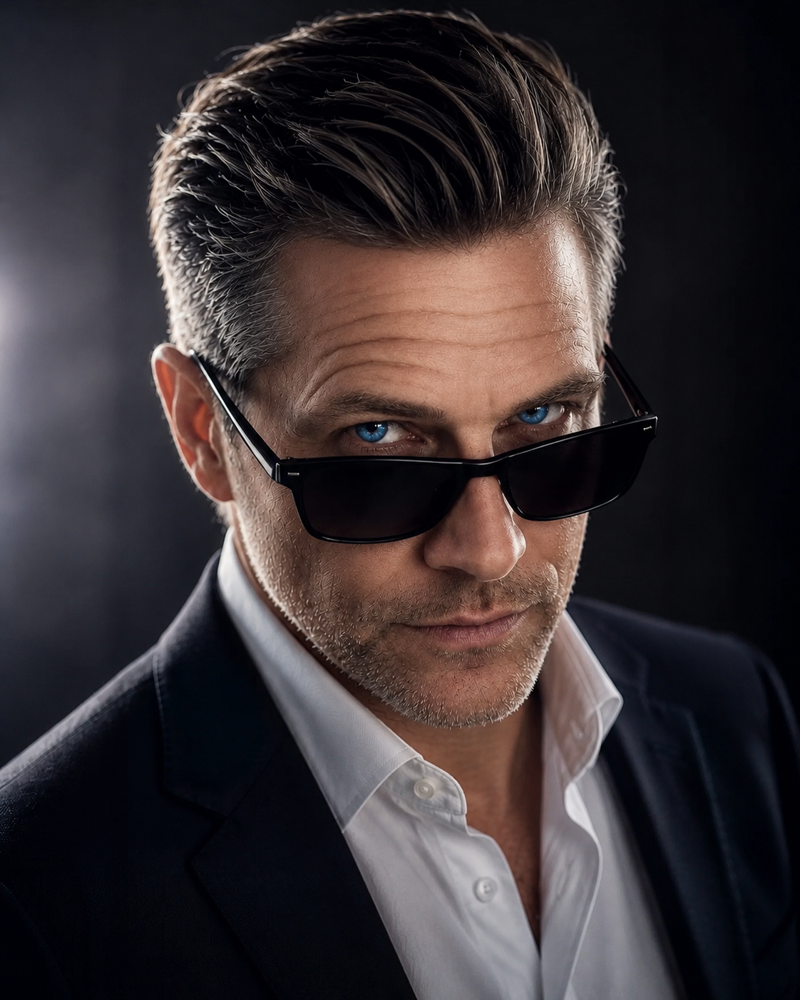
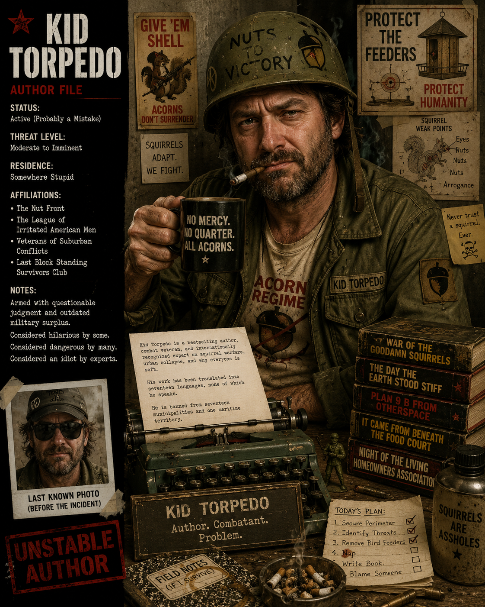

Four voices. One reliquary.
Authors

Joohls Torinova
Speculative fiction exploring perception, memory, identity, uncertainty, and the fragile structures people mistake for reality.

Ana Dorne Severin
Intimate literary fiction concerned with memory, loss, love, grief, and the hidden emotional lives people carry through ordinary days.
Rev Nevik
Philosophical works examining consciousness, meaning, silence, civilization, and humanity's place within a vast and indifferent universe.

Kid Torpedo
An internationally unrecognized authority on poor decisions, questionable judgment, and catastrophic American stupidity.